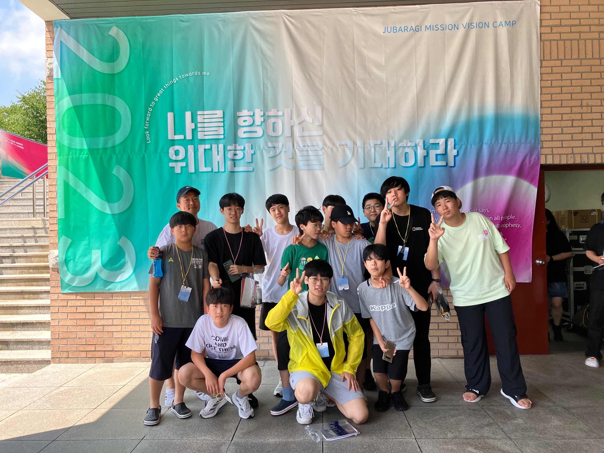

My Name is Yeachan-Choi(Open : 27, Aug. 2023)

나의 첫 아이들과 첫 여름수련회 2023년 연말에, 내 첫 아이들과 함께...
학력 -> 자세히 보실 수 있습니다.약력 -> 자세히 보실 수 있습니다.인삿말
소개
설교문
최예찬_설교문1
최예찬_설교문2
최예찬_설교문3
최예찬_설교문4 최예찬_설교문5
최예찬_설교문6
최예찬_설교문7
최예찬_설교문8
설교영상
VIDEO
시무교회 주보(개인정보로 인해 중고등부 주보로 대체하겠습니다.)
주보_1
특강&칼럼(제자교육, 과학, 수학 특강 등)
VIDEO
학력
단국대학교 고려대학교 총신대학교 한국방송통신대학교 약력 프리랜서 수학강사(2021 ~ 2022)
푸른꿈동산학교 대한예수교장로회 합동 황해노회 주사랑교회
대한예수교장로회 합동 황해노회 목사후보생(2023.10 ~ )
인삿말
안녕하세요. 제 이름은 최예찬 입니다.총신대학교 신학대학 신학과 와한국방송통신대학교 자연과학대학 컴퓨터과학과 에 재학 중이며주사랑교회 푸른꿈동산학교 수학교사로 수학을 아이들에게 가르쳤습니다.
저의 개인적 필기 공간입니다. 댓글을 다셔도 괜찮습니다.
Please enable JavaScript to view the comments powered by Disqus.